This page compares PriSep with an Oracle CBF baseline on 10 reproducibly selected test mixtures. Each speaker group contains the clean reference and the estimates from both methods.
Spectrograms use a linear 0–4 kHz frequency axis. Metrics are computed per displayed speaker; the mixture row reports S1 and S2 noisy scores.
| Signal | Speaker | Audio | Linear-frequency log-power spectrogram | SI-SDR (dB) | BSS-Eval SDR (dB) | PESQ | eSTOI |
|---|---|---|---|---|---|---|---|
| Mixture | Both | 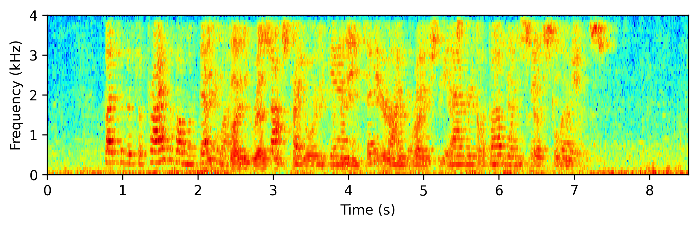 | S1 -8.1S2 -6.8 | S1 -2.7S2 0.3 | S1 1.11S2 1.34 | S1 0.362S2 0.355 | |
| Clean | Speaker 1 | 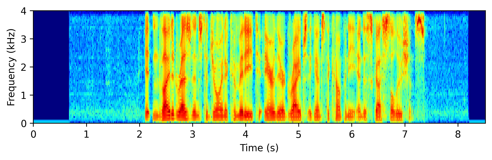 | — | — | — | — | |
| PriSep Estimate (row 4c of Table 4) | Speaker 1 | 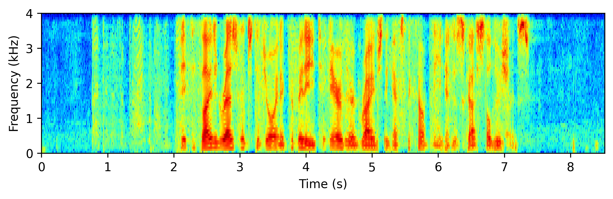 | 3.5 | 8.7 | 2.23 | 0.690 | |
| Oracle CBF Estimate | Speaker 1 | 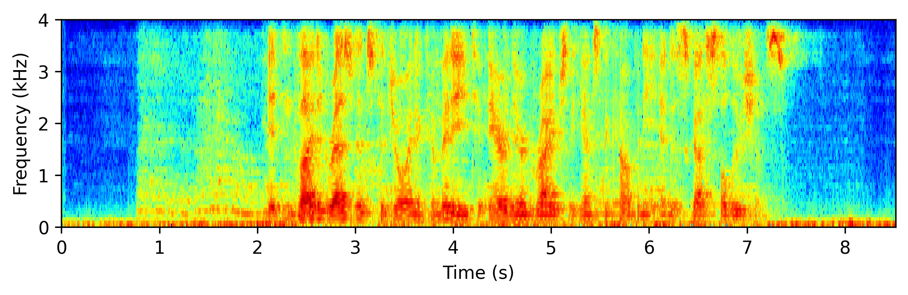 | -1.7 | 6.7 | 1.96 | 0.672 | |
| Clean | Speaker 2 | 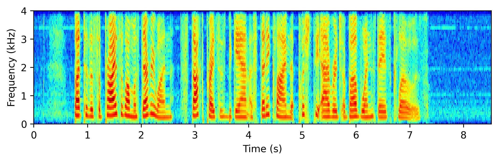 | — | — | — | — | |
| PriSep Estimate (row 4c of Table 4) | Speaker 2 | 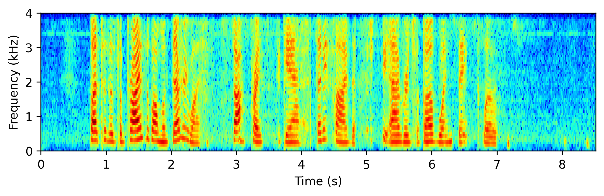 | 5.4 | 10.2 | 2.14 | 0.649 | |
| Oracle CBF Estimate | Speaker 2 | 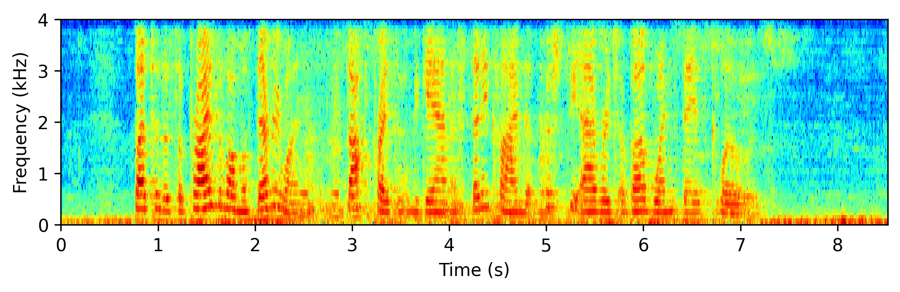 | -1.0 | 5.9 | 1.86 | 0.690 |
| Signal | Speaker | Audio | Linear-frequency log-power spectrogram | SI-SDR (dB) | BSS-Eval SDR (dB) | PESQ | eSTOI |
|---|---|---|---|---|---|---|---|
| Mixture | Both | 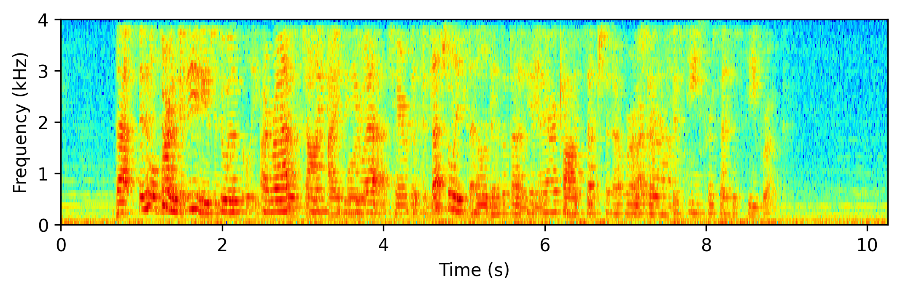 | S1 -7.5S2 -5.0 | S1 -2.8S2 1.5 | S1 1.40S2 1.27 | S1 0.345S2 0.407 | |
| Clean | Speaker 1 | 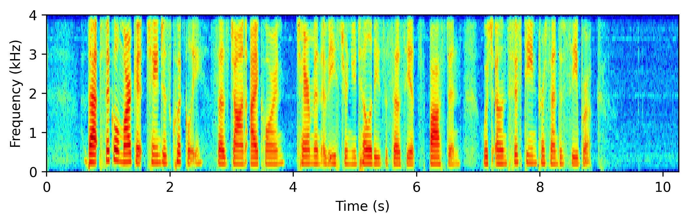 | — | — | — | — | |
| PriSep Estimate (row 4c of Table 4) | Speaker 1 | 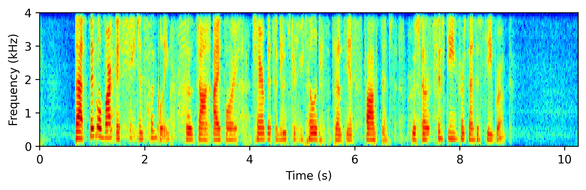 | 4.7 | 8.7 | 2.18 | 0.648 | |
| Oracle CBF Estimate | Speaker 1 | 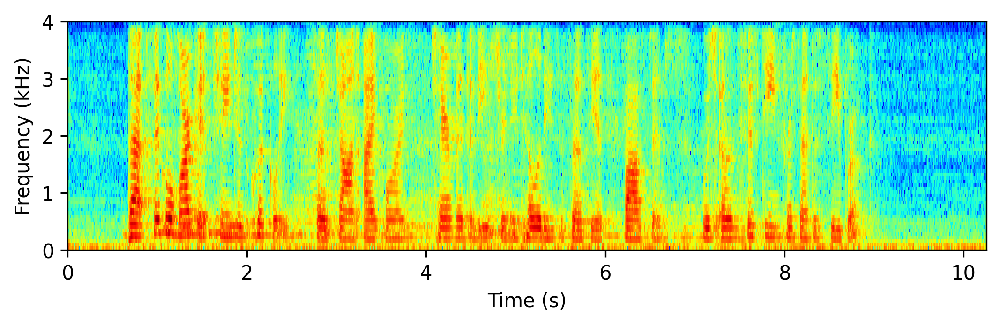 | 2.2 | 8.8 | 2.17 | 0.724 | |
| Clean | Speaker 2 | 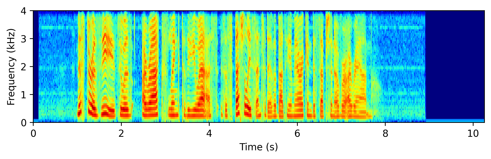 | — | — | — | — | |
| PriSep Estimate (row 4c of Table 4) | Speaker 2 | 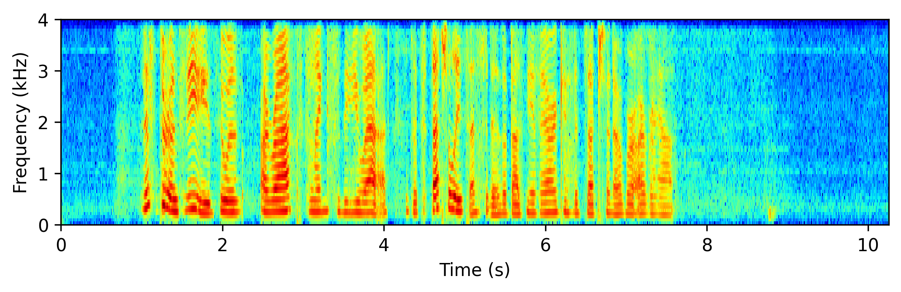 | 5.4 | 10.5 | 2.27 | 0.744 | |
| Oracle CBF Estimate | Speaker 2 | 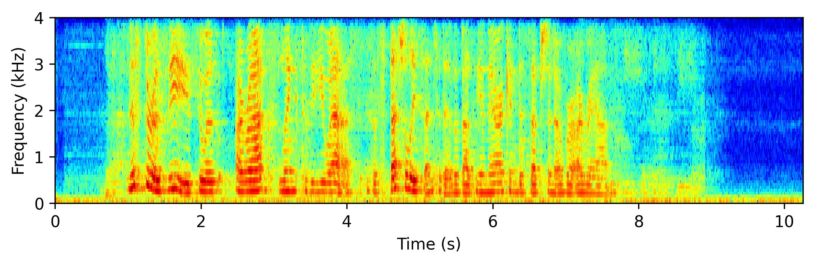 | 2.1 | 12.0 | 1.99 | 0.737 |
| Signal | Speaker | Audio | Linear-frequency log-power spectrogram | SI-SDR (dB) | BSS-Eval SDR (dB) | PESQ | eSTOI |
|---|---|---|---|---|---|---|---|
| Mixture | Both | 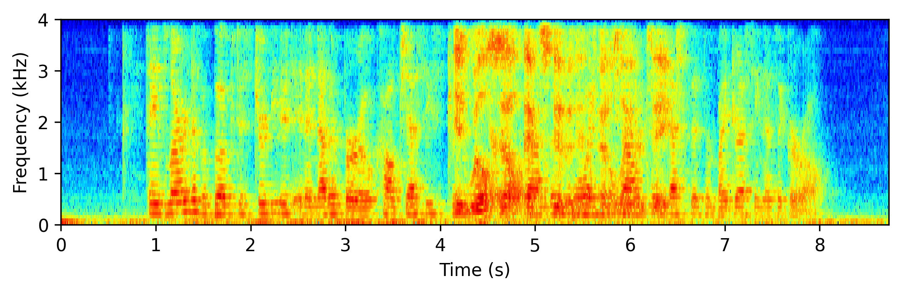 | S1 -4.1S2 -6.6 | S1 -0.1S2 -1.2 | S1 1.50S2 1.56 | S1 0.493S2 0.410 | |
| Clean | Speaker 1 | 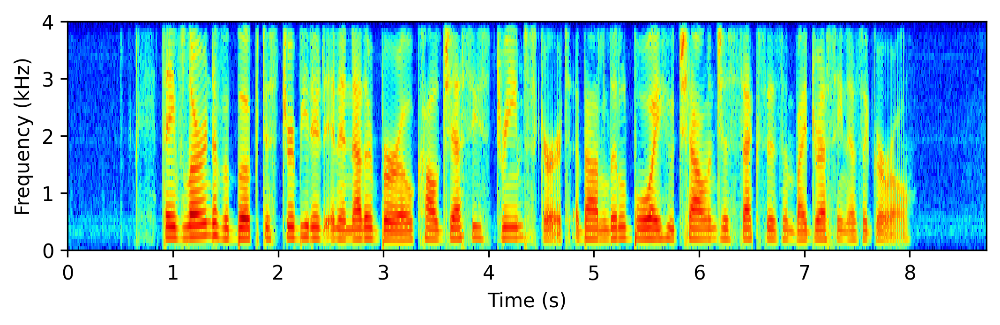 | — | — | — | — | |
| PriSep Estimate (row 4c of Table 4) | Speaker 1 | 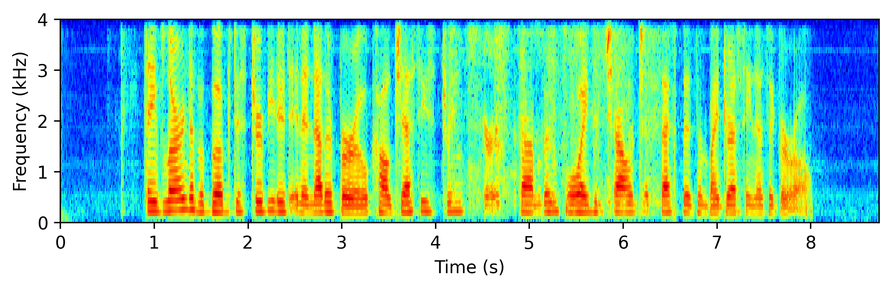 | 4.6 | 11.7 | 2.58 | 0.793 | |
| Oracle CBF Estimate | Speaker 1 | 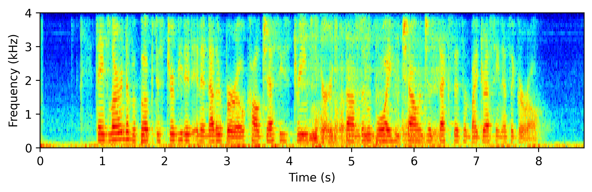 | 2.6 | 7.4 | 2.33 | 0.782 | |
| Clean | Speaker 2 | 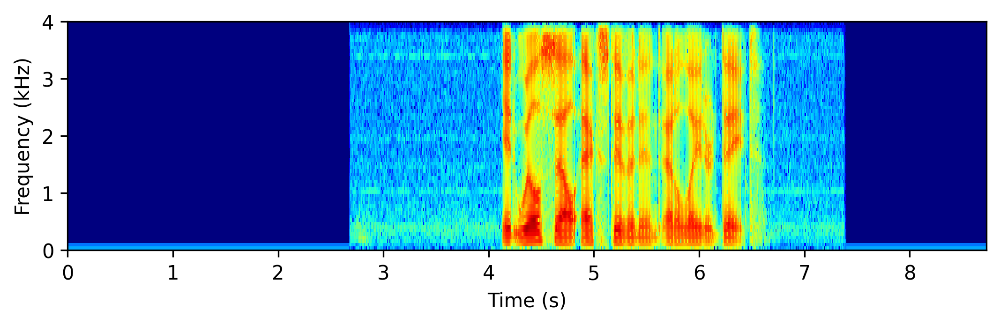 | — | — | — | — | |
| PriSep Estimate (row 4c of Table 4) | Speaker 2 | 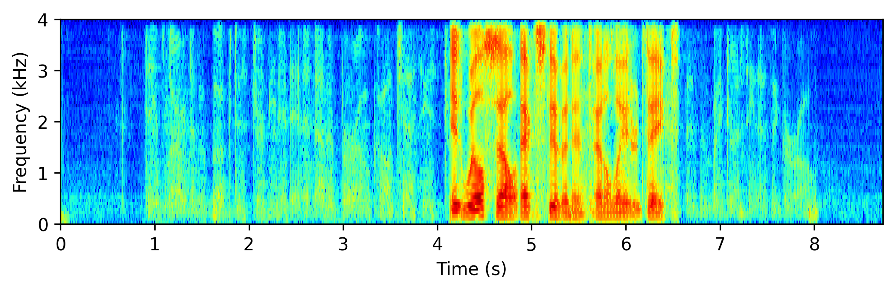 | 3.2 | 10.4 | 2.48 | 0.741 | |
| Oracle CBF Estimate | Speaker 2 | 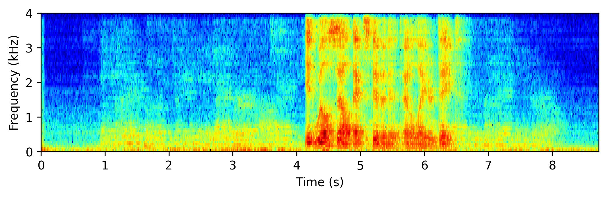 | -2.1 | 9.7 | 1.84 | 0.607 |
| Signal | Speaker | Audio | Linear-frequency log-power spectrogram | SI-SDR (dB) | BSS-Eval SDR (dB) | PESQ | eSTOI |
|---|---|---|---|---|---|---|---|
| Mixture | Both | 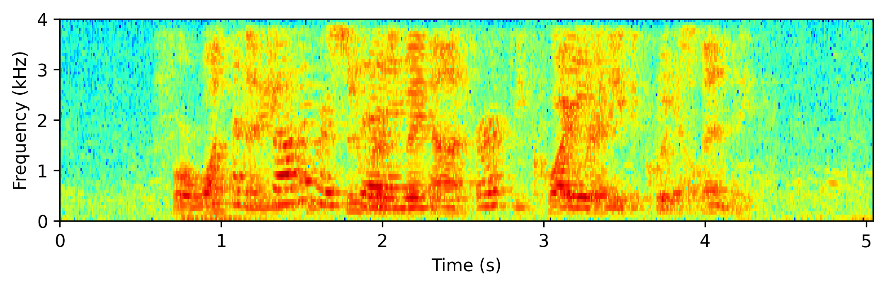 | S1 -8.1S2 -5.7 | S1 -1.2S2 0.1 | S1 1.44S2 1.35 | S1 0.463S2 0.315 | |
| Clean | Speaker 1 | 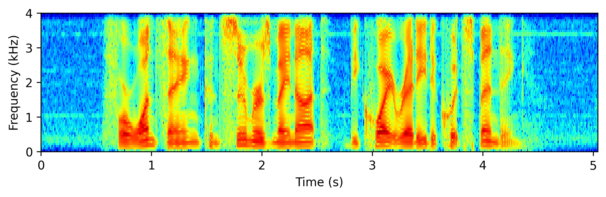 | — | — | — | — | |
| PriSep Estimate (row 4c of Table 4) | Speaker 1 | 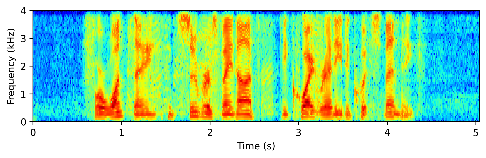 | 2.9 | 9.7 | 2.32 | 0.755 | |
| Oracle CBF Estimate | Speaker 1 | 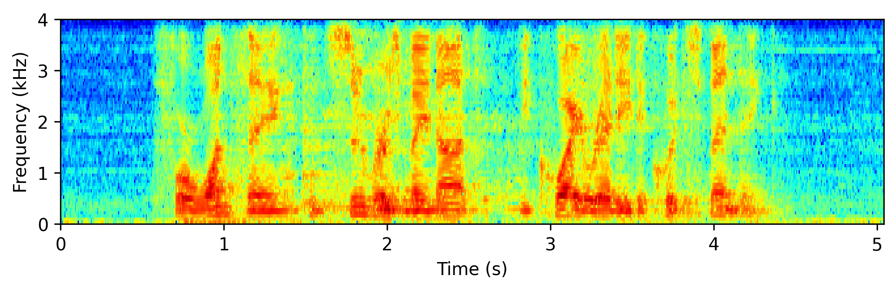 | -1.1 | 8.6 | 2.11 | 0.737 | |
| Clean | Speaker 2 | 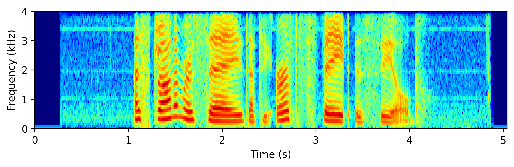 | — | — | — | — | |
| PriSep Estimate (row 4c of Table 4) | Speaker 2 | 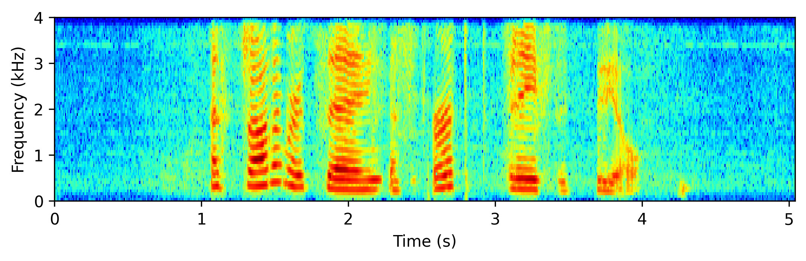 | 4.1 | 10.9 | 2.41 | 0.593 | |
| Oracle CBF Estimate | Speaker 2 | 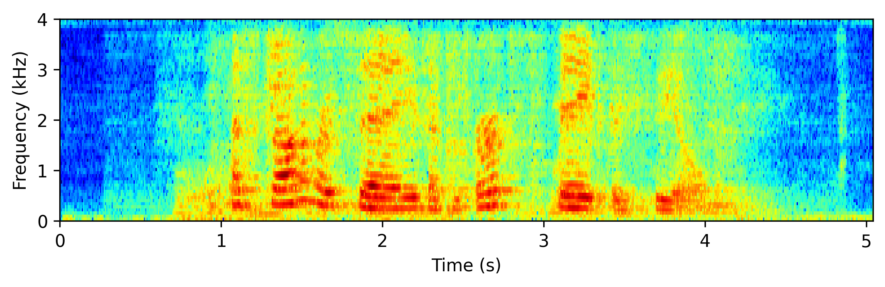 | 0.1 | 11.3 | 1.98 | 0.563 |
| Signal | Speaker | Audio | Linear-frequency log-power spectrogram | SI-SDR (dB) | BSS-Eval SDR (dB) | PESQ | eSTOI |
|---|---|---|---|---|---|---|---|
| Mixture | Both | 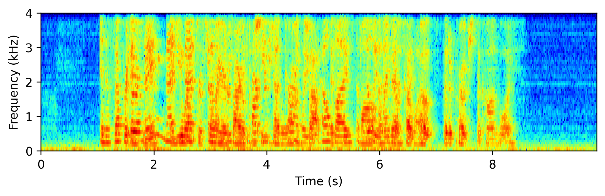 | S1 -6.9S2 -6.2 | S1 1.9S2 -1.7 | S1 1.45S2 1.25 | S1 0.502S2 0.405 | |
| Clean | Speaker 1 | 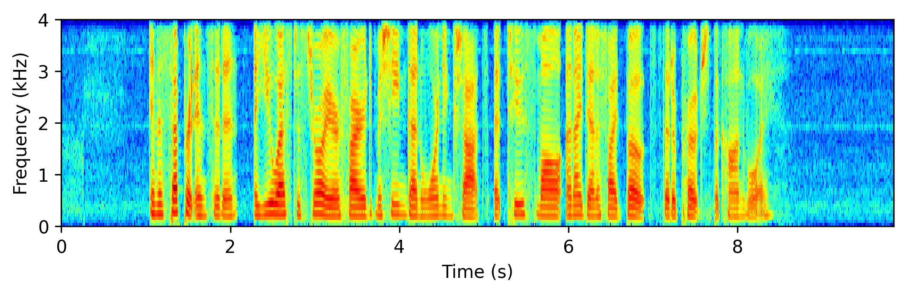 | — | — | — | — | |
| PriSep Estimate (row 4c of Table 4) | Speaker 1 | 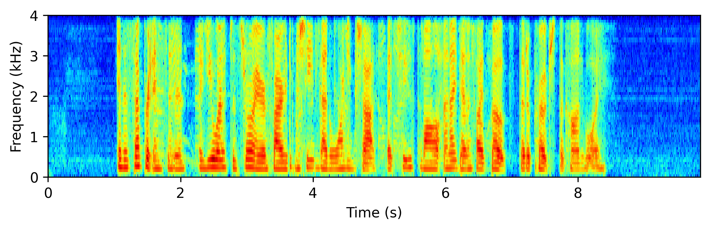 | 0.7 | 11.9 | 2.46 | 0.777 | |
| Oracle CBF Estimate | Speaker 1 | 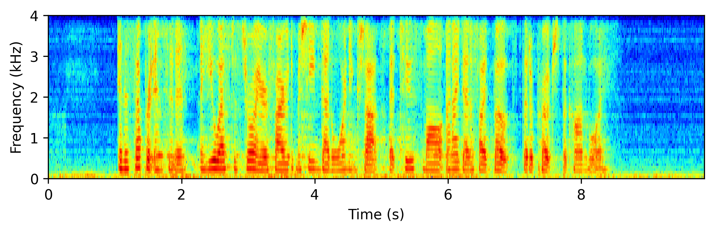 | -0.2 | 11.4 | 2.43 | 0.814 | |
| Clean | Speaker 2 | 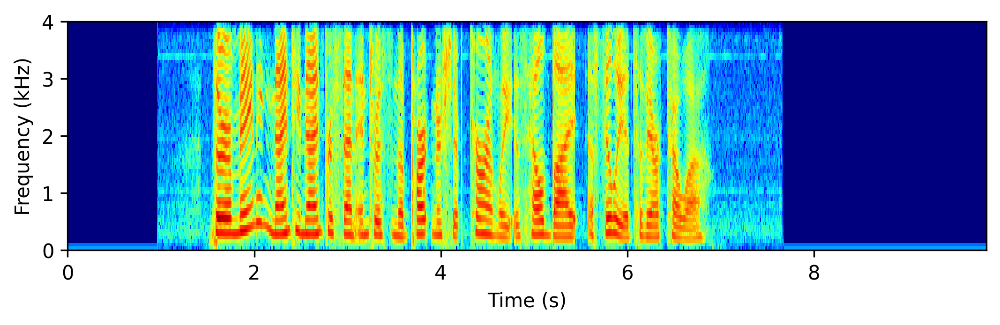 | — | — | — | — | |
| PriSep Estimate (row 4c of Table 4) | Speaker 2 | 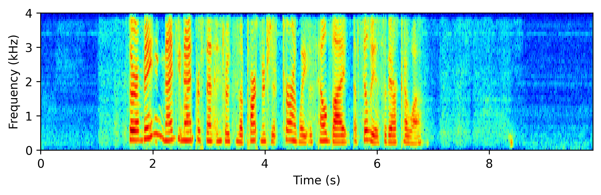 | 2.8 | 10.1 | 2.22 | 0.791 | |
| Oracle CBF Estimate | Speaker 2 | 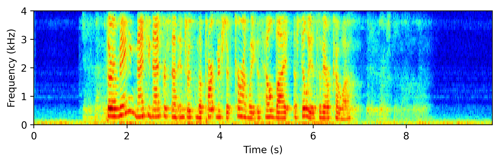 | -0.1 | 12.0 | 1.78 | 0.778 |
| Signal | Speaker | Audio | Linear-frequency log-power spectrogram | SI-SDR (dB) | BSS-Eval SDR (dB) | PESQ | eSTOI |
|---|---|---|---|---|---|---|---|
| Mixture | Both | 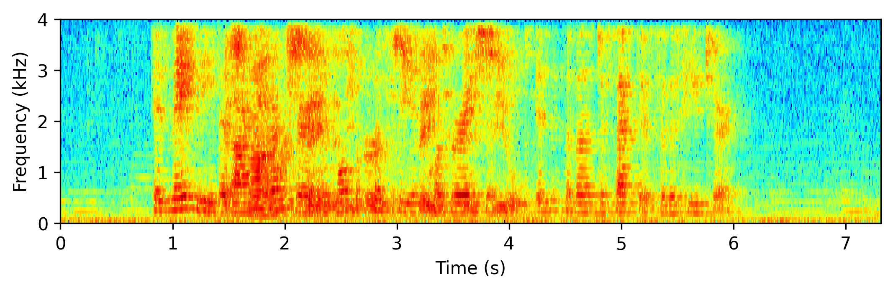 | S1 -8.9S2 -5.5 | S1 -3.2S2 1.1 | S1 1.23S2 1.49 | S1 0.362S2 0.402 | |
| Clean | Speaker 1 | 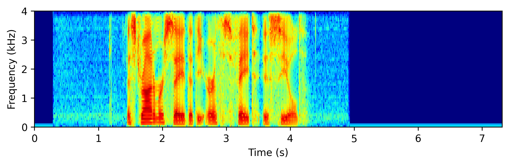 | — | — | — | — | |
| PriSep Estimate (row 4c of Table 4) | Speaker 1 | 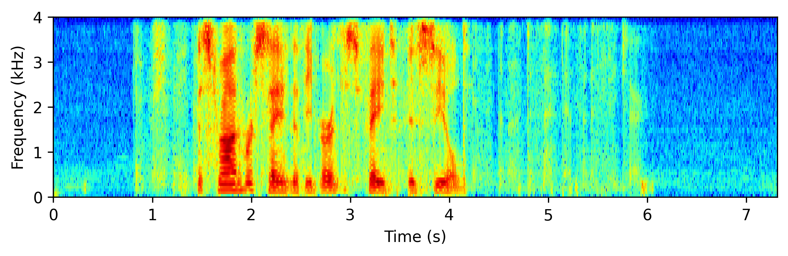 | 1.6 | 7.6 | 2.12 | 0.749 | |
| Oracle CBF Estimate | Speaker 1 | 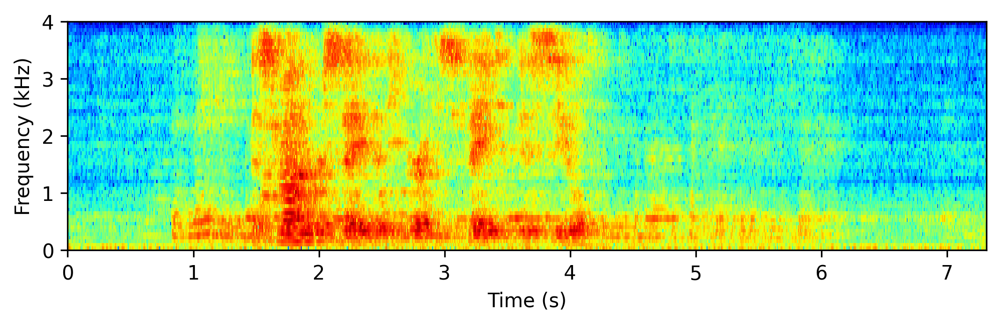 | -11.5 | 2.0 | 1.50 | 0.334 | |
| Clean | Speaker 2 | 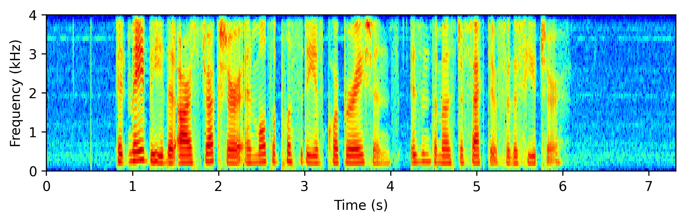 | — | — | — | — | |
| PriSep Estimate (row 4c of Table 4) | Speaker 2 | 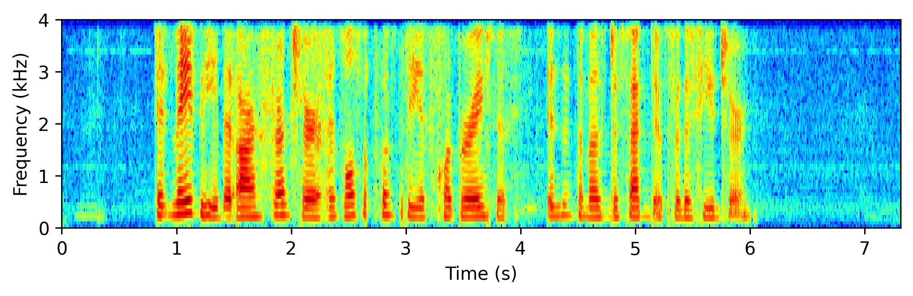 | 4.1 | 10.4 | 2.49 | 0.717 | |
| Oracle CBF Estimate | Speaker 2 | 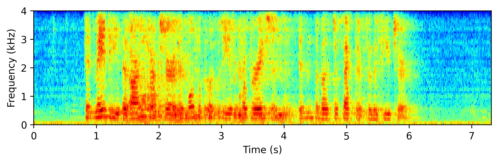 | -3.2 | 5.1 | 1.75 | 0.558 |
| Signal | Speaker | Audio | Linear-frequency log-power spectrogram | SI-SDR (dB) | BSS-Eval SDR (dB) | PESQ | eSTOI |
|---|---|---|---|---|---|---|---|
| Mixture | Both | 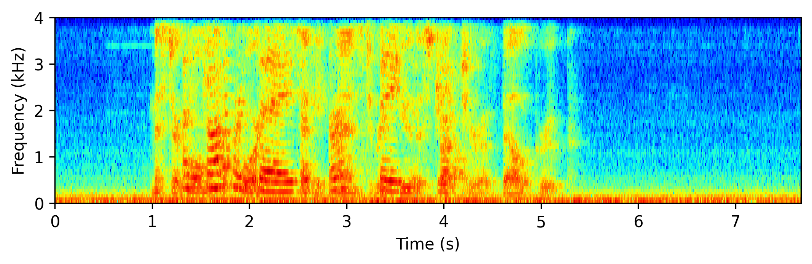 | S1 -6.3S2 -8.2 | S1 -0.0S2 -4.7 | S1 1.40S2 1.23 | S1 0.359S2 0.477 | |
| Clean | Speaker 1 | 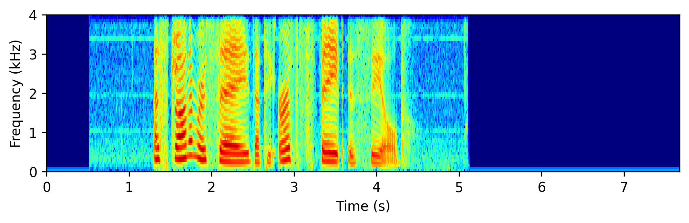 | — | — | — | — | |
| PriSep Estimate (row 4c of Table 4) | Speaker 1 | 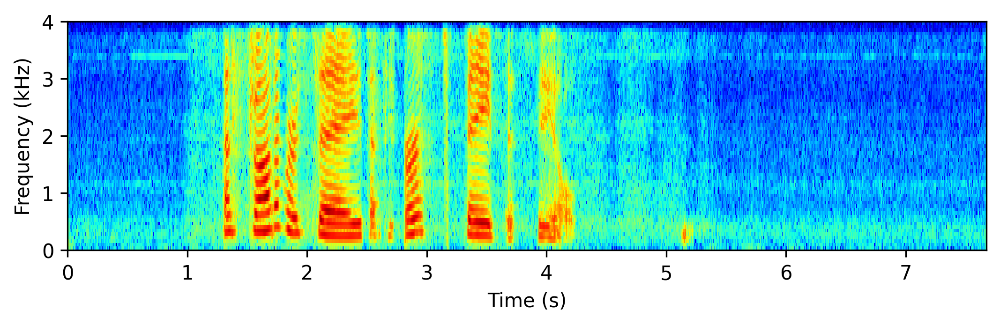 | 5.1 | 12.3 | 2.56 | 0.667 | |
| Oracle CBF Estimate | Speaker 1 | 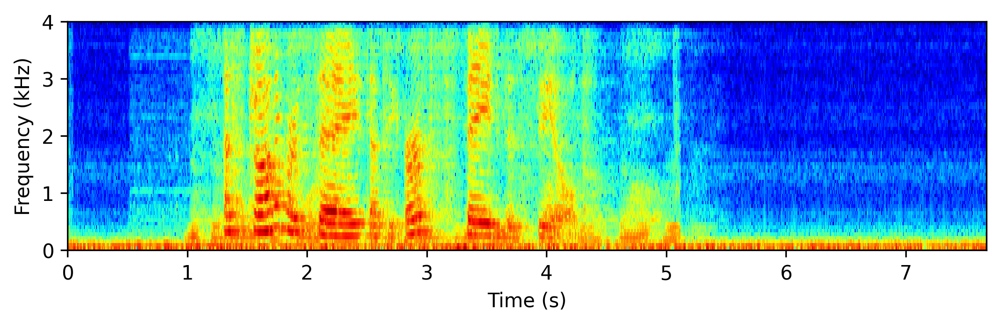 | -1.0 | 4.8 | 1.89 | 0.612 | |
| Clean | Speaker 2 | 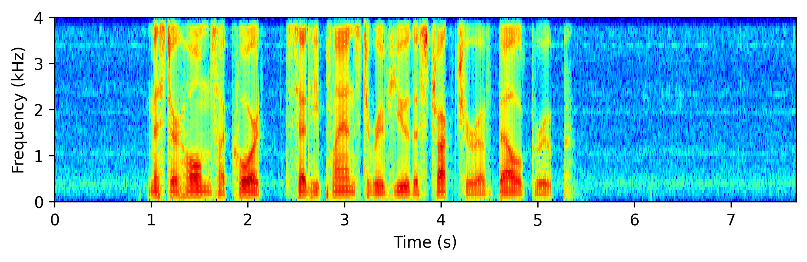 | — | — | — | — | |
| PriSep Estimate (row 4c of Table 4) | Speaker 2 | 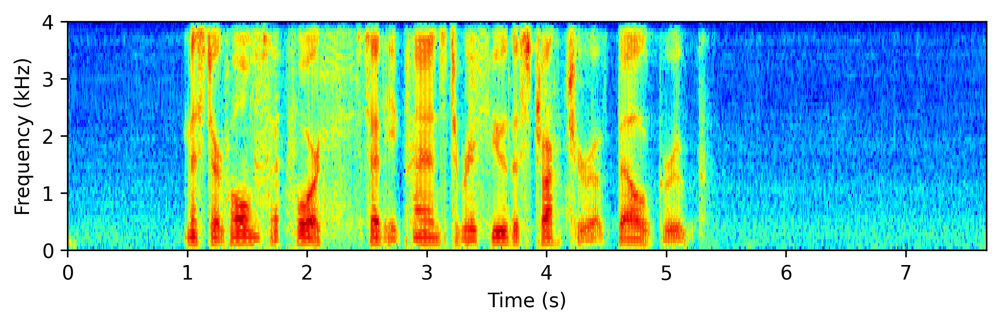 | 4.9 | 10.0 | 2.40 | 0.772 | |
| Oracle CBF Estimate | Speaker 2 | 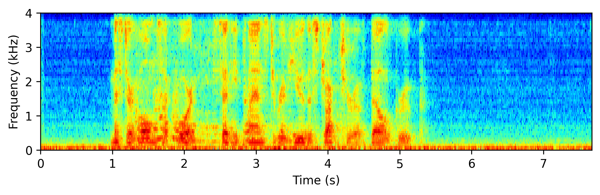 | -2.6 | 3.2 | 2.07 | 0.725 |
| Signal | Speaker | Audio | Linear-frequency log-power spectrogram | SI-SDR (dB) | BSS-Eval SDR (dB) | PESQ | eSTOI |
|---|---|---|---|---|---|---|---|
| Mixture | Both | 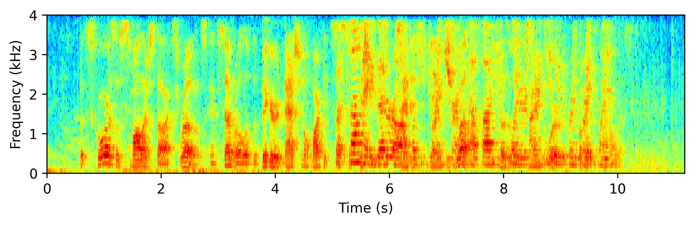 | S1 -9.2S2 -2.6 | S1 -2.5S2 1.0 | S1 1.51S2 1.76 | S1 0.367S2 0.526 | |
| Clean | Speaker 1 | — | — | — | — | ||
| PriSep Estimate (row 4c of Table 4) | Speaker 1 | 2.3 | 9.6 | 2.28 | 0.717 | ||
| Oracle CBF Estimate | Speaker 1 | -1.5 | 9.4 | 1.67 | 0.594 | ||
| Clean | Speaker 2 | — | — | — | — | ||
| PriSep Estimate (row 4c of Table 4) | Speaker 2 | 7.8 | 12.4 | 2.57 | 0.783 | ||
| Oracle CBF Estimate | Speaker 2 | 4.1 | 12.4 | 2.27 | 0.753 |
| Signal | Speaker | Audio | Linear-frequency log-power spectrogram | SI-SDR (dB) | BSS-Eval SDR (dB) | PESQ | eSTOI |
|---|---|---|---|---|---|---|---|
| Mixture | Both | S1 -6.6S2 -8.0 | S1 -1.4S2 -1.1 | S1 1.43S2 1.37 | S1 0.440S2 0.394 | ||
| Clean | Speaker 1 | — | — | — | — | ||
| PriSep Estimate (row 4c of Table 4) | Speaker 1 | 4.7 | 8.9 | 2.48 | 0.740 | ||
| Oracle CBF Estimate | Speaker 1 | 1.5 | 6.3 | 2.29 | 0.802 | ||
| Clean | Speaker 2 | — | — | — | — | ||
| PriSep Estimate (row 4c of Table 4) | Speaker 2 | 3.4 | 8.4 | 2.17 | 0.731 | ||
| Oracle CBF Estimate | Speaker 2 | -2.0 | 7.6 | 1.69 | 0.615 |
| Signal | Speaker | Audio | Linear-frequency log-power spectrogram | SI-SDR (dB) | BSS-Eval SDR (dB) | PESQ | eSTOI |
|---|---|---|---|---|---|---|---|
| Mixture | Both | S1 -4.7S2 -8.0 | S1 -0.0S2 -1.6 | S1 1.30S2 1.41 | S1 0.299S2 0.405 | ||
| Clean | Speaker 1 | — | — | — | — | ||
| PriSep Estimate (row 4c of Table 4) | Speaker 1 | 4.2 | 10.0 | 2.24 | 0.713 | ||
| Oracle CBF Estimate | Speaker 1 | 1.0 | 9.4 | 1.60 | 0.588 | ||
| Clean | Speaker 2 | — | — | — | — | ||
| PriSep Estimate (row 4c of Table 4) | Speaker 2 | 2.3 | 8.2 | 2.34 | 0.745 | ||
| Oracle CBF Estimate | Speaker 2 | -1.9 | 5.3 | 1.83 | 0.642 |